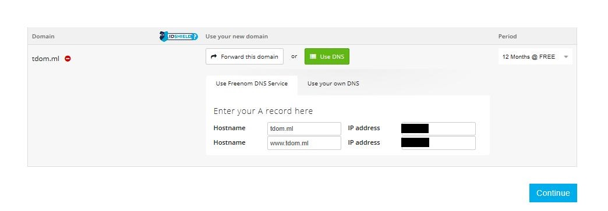
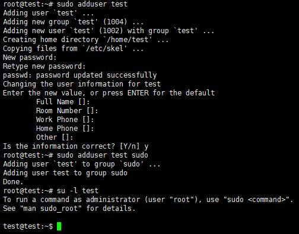
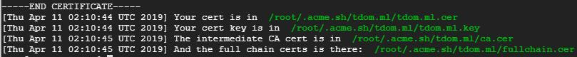
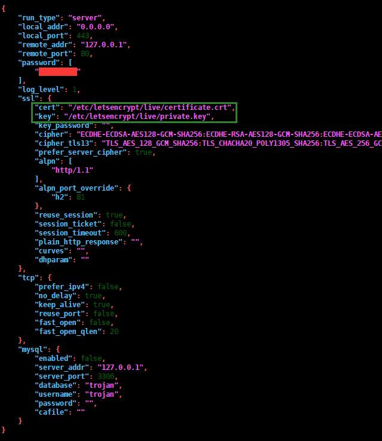

综述
本文简介
本文总结了自己在VPS搭建trojan-gfw代理过程中遇到的各种坑，以及最后的解决方案，以供大家参考。
本文的宗旨在于，将大量重复性的工作集中到配置过程中，以让使用过程尽量简单。所以本文的配置过程相较于网上的某些教程稍微复杂一点，但是如果严格按照本文配置过程配置的话，那么配置完成之后服务器端就可以几乎不用搭理他了，然后客户端几乎是拿到手就可以使用，特别适合有好几个人一起共享的情况。
本文分为7章，将按操作顺序介绍部署用于trojan代理服务的VPS服务器的详细过程，按照步骤操作一切正常的话一小时之内即可配置成功。如果配置过程中有什么疑问，欢迎在留言区交流！
trojan工作原理浅析
trojan是一个比较新的翻墙软件，在设计时采用了更适应国情的思路。在穿透gfw时，人们认为强加密和随机混淆可能会欺骗gfw的过滤机制。然而，trojan实现了这个思路的反面：它模仿了互联网上最常见的HTTPS协议，以诱骗gfw认为它就是HTTPS，从而不被识别。  如图所示，trojan工作在443端口，并且处理来自外界的HTTPS请求，如果是合法的trojan请求，那么为该请求提供服务，否则将该流量转交给web服务器Nginx，由Nginx为其提供服务。基于这个工作过程可以知道，trojan的一切表现均与Nginx一致，不会引入额外特征，从而达到无法识别的效果。当然，为了防止恶意探测，我们需要将80端口的流量全部重定向到443端口，并且服务器只暴露80和443端口，这样可以使得服务器与常见的Web服务器表现一致。
如图所示，trojan工作在443端口，并且处理来自外界的HTTPS请求，如果是合法的trojan请求，那么为该请求提供服务，否则将该流量转交给web服务器Nginx，由Nginx为其提供服务。基于这个工作过程可以知道，trojan的一切表现均与Nginx一致，不会引入额外特征，从而达到无法识别的效果。当然，为了防止恶意探测，我们需要将80端口的流量全部重定向到443端口，并且服务器只暴露80和443端口，这样可以使得服务器与常见的Web服务器表现一致。
前置条件
系统要求：Ubuntu >= 16.04 or Debian >= 9
VPS服务器购买
注册vultr
我使用的服务器是vultr。主要因为其按小时计费，随时可以停用服务器。这一点很重要，现在gfw相当高，所以你买到的机器很可能是已经被墙了的。其次，vultr本身没有被墙，这一点很重要，不然就是先有鸡还是先有蛋的问题了。当然，可以支付宝或微信付款也是一个加分点。vultr注册地址：https://www.vultr.com/?ref=7241747。点击链接跳转到vultr，网页右上角有个Create Account就是注册的地方了，接下来就是注册并激活账号了。
最新资讯：vultr充值10美元送50美元活动开始啦，必须是新用户，可支付宝或微信等支付方式，活动注册地址：https://www.vultr.com/?ref=7792804-4F！不过要注意的是，赠送的50美元有效期只有一个月，所以这一个月你可以开配置好一点的vps啦！！！
上面的注册地址携带了我的邀请码，不介意的话可以通过上面的链接注册呀，大家互惠互利咯。如果介意那么将网址后面的邀请码删除即可，但是要注意的是没有邀请码充值是不会赠送50美元的哦。
充值
在购买服务器之前需要先充值。登陆vultr之后如图Billing->Alipay，选好要充值的金额数，然后Pay with Alipay即可跳转到支付宝扫码支付页面。 
购买服务器
点击vultr网页右上角的蓝色+图标即可为账户添加服务器。 
注意：向下滚动有很多选项，不要直接点击Deploy Now，这样会使用默认参数，但不是我们想要的！ 第一个选项为选择服务器类型（Choose Server），这里选择Cloud Compute。 
第二个选项为选择服务器地址（Server Location），建议选择硅谷（Silicon Valley，离google最近），而不要选择日本（用的人多，大部分IP已经被墙）； 
第三个选项为选择服务器类型（Server Type），即选择服务器操作系统。作为示例，这里我们选择选择Ubuntu 18.10 x64（强烈推荐），不过系统要求部分所列出的操作系统均已测试通过，同一个发行版本的系统在我要求以下的版本测试不通过。注意如果你使用其他vps服务商的vps，可能有minimal选项，不能选择那一个，很多依赖乃没有安装，会导致自己配置失败（当然也可以，缺少哪个依赖自己再用apt安装就好了，例如：apt install -y sudo，sudo apt install -y vi等）。最后，如果你确实是有其他系统或者比较旧的系统版本需要安装trojan的话，建议使用docker，正文中部分配置只需要做细微修改即可，为了文章的整体性我就不放在正文了，请参考评论区。 
第四个选项为选择服务器大小（Server Size），即选择服务器硬件性能。因为我们使用VPS服务器翻墙，所以性能瓶颈不在配置，而在网络带宽之类的。由于vultr的服务器带宽都是100M的，所以服务器当然是往便宜了选。当然，$2.5/mo的一般都是缺货的。选择$5/mo的就好，一个月三十几块钱，要是有好几个人一起分担的话就相当实惠了。 
第五、六、七三个选项可以不用管它。
第八条要求为即将部署的服务器命名并给一个标签，随意就好。
此时可以点击右下角的现在部署（Deploy Now），vultr即开始分配资源，安装系统。此时Servers页面可以看到服务器信息，状态显示installing。当状态切换为Running的时候，服务器就可以使用了。 
服务器信息查看
服务器安装结束之后在Servers页面点击刚才购买的服务器名字即可跳转到服务器详情页。如图右上角有一个View console可以直接通过网页连接到服务器，但是由于它不支持复制粘贴，不方便，我们需要使用第三方工具连接到服务器。所以需要知道IP、用户名和密码，如图左下角。 
域名申请与解析
trojan需要一个域名用来做伪装，所以需要先申请一个域名。如果你只是用来翻墙没有其他作用，那么建议注册一个免费域名即可。本教程使用freenom免费域名和cloudflareDNS为例。
如果自己已经有域名了那么可以不用申请，直接用一个子域名就可以了。如果你的域名不是在cloudflare购买，那么你有两个方案可用。1. 将你的域名转移到cloudflare解析，这个对于已经有域名的来说应该不难，就不多说了；2. 下文与cloudflare相关的部分自行参考这个文档做调整，也很简单，找到你自己的DNS服务商，按照指引操作即可。建议是先严格按照教程操作成功之后再改为自己的域名，否则难免出奇怪的问题。
freenom免费域名申请
我自己在使用Edge注册freenom的时候会失败，使用chrome才可以，你如果也失败了请换一个浏览器试试！
freenom在检测到ip对应的国家和你填写的不一致就会不允许你注册，所以不要挂VPN去申请域名。
freenom注册地址在这里https://www.freenom.com，支持简体中文，可以自行切换。在寻找一个免费域名的输入框中输入自己理想的域名点击检查可用性，如图所示。检查到可用的中意的域名之后，点击现在获取即可锁定该域名。 
现在可以点击完成按钮跳转到DNS配置和申请年限界面。点击Use DNS>>Use Frenom DNS Service。两个IP address框都直接输入0.0.0.0（这个没用，一会儿会改到cloudflareDNS）。Period选择12 Months @ FREE，然后点击Continue，输入并验证你的邮箱和信息即可。注意上面的提示，不要挂VPN，很多人会卡在验证账户的地方，一般都是挂了VPN导致的。
在freenom申请的免费域名是可以无限免费续期的，除非被人花钱抢注，所以自己每隔几个月回来续期一下就可以啦。反正这个域名只是拿来翻墙用，被人抢注了马上换一个成本也不大。如果介意这个的话，建议自己买付费域名，国外域名服务商推荐namecheap，不要买国内域名服务商的域名。 
注册cloudflare
cloudflare注册地址在这里https://www.cloudflare.com，网页右上角有个Sign up就是注册的地方了，接下来就是注册并激活账号了。注册完成之后会让你添加你的网站，输入你刚才申请的网站之后点击Add site。 
接下来是一个提示页面，直接下一步即可。然后计划选择FREE就好，够用了，然后点击confirm plan。 
然后cloudflare会导入现有的DNS记录，你也可以自己再添加，也可以在这里修改，现在需要将DNS记录指向自己的服务器。假设你的服务器地址是10.10.10.10，那么如下图所示：将域名A记录指向你的服务器即可，www的A记录删除不用。如果IP地址是IPv6的，那么需要添加的是AAAA记录而不是A记录（客户端也得有IPv6地址才能连接上服务器）。vultr的服务器是IPv4和IPv6地址都有的，可以即添加A记录又添加AAAA记录，客户端会自动选择他将会使用的IP地址版本。添加好记录之后，点击continue。注意：不能使用CDN（On Cloudflare），即DNS记录后面的云需要是灰色的而不是橙色的，否则会导致握手失败无法连接上服务器，参考trojan issue 70 
接下来就是最关键的一步，将你的DNS服务器转移到cloudflare。在这里你可以看到cloudflare让你将ns01.freenom.com和ns02.freenom.com分别改为anna.ns.cloudflare.com和sid.ns.cloudflare.com（每个人的可能不会一样，请按照cloudflare的提示）。
现在登陆freenom，点击域名后面对应的Manage Domain。 
然后定位到Management Tools>>Nameservers。将DNS服务器改为Use custom nameservers (enter below)，然后在Nameserver 1和Nameserver 2输入cloudflare给的两个dns，如图所示，点击change Nameservers即可。然后回到cloudflare点击Continue。 
此时cloudflare会检测你的dns服务器是否已经切换到了cloudflare，如果没有检测到已经切换的话，稍作等待即可。最终，DNS配置结果如下图所示，即 
VPS服务器部署
跳过了上面系统选择与购买部分的要注意啦，本教程目前测试通过操作系统版本是Ubuntu 16.04 or Debian 9及以上，更低版本系统无法成功搭建，其他系统尚未测试！
跳过了上面系统选择与购买部分的要注意啦，本教程目前测试通过操作系统版本是Ubuntu 16.04 or Debian 9及以上，更低版本系统无法成功搭建，其他系统尚未测试！
跳过了上面系统选择与购买部分的要注意啦，本教程目前测试通过操作系统版本是Ubuntu 16.04 or Debian 9及以上，更低版本系统无法成功搭建，其他系统尚未测试！
远程工具安装
本文使用的第三方远程管理工具叫做Xshell。Xshell学生和家庭版是免费的，可以放心试用（觉得好用的话，不差钱的各位也可以注册一下支持软件开发者噢）。安装好Xshell之后即可开始连接服务器进行部署了。不过Xshell没有Mac端，所以Mac可以使用其他ssh客户端，甚至直接用终端都可以，用法大同小异。
连接服务器
启动Xshell，从菜单栏的文件->新建打开新建会话窗口如下图。会话名称随便取一个都可以，主机填写刚才记下来的服务器IP地址或者直接填域名也是可以的。点击确定立即尝试连接服务器，如果能连接上服务器会提示输入用户名和密码。用户名为root，密码可以从vultr服务器详情页拷贝过来。可以记住用户名和密码，这样下次连接就不用再输入那个复杂的密码了（当然密码是可以修改的，但是没必要。系统自动生成的密码强度相当高，可以避免暴力破解。自己设的密码就不好说了，而且还容易忘记）。 
连接成功之后会出现命令提示符：root@username:~#。 
连接上服务器后就可以开始安装trojan了。对于Xshell连不上服务器的情况，如果是使用域名连接的话，先ping一下域名看看是否DNS解析尚未生效，如果尚未生效，那么需要等一下。如果ping不通IP的话，那么多半是被墙了，估计只能换掉服务器了（血的教训：先购买新服务器，再去vultr服务器页面Destroy。反过来的话间隔太小，估计又买到原来的ip了）。
创建用户账户
为了系统安全，自己新建一个非root但是有sudo权限的用户继续后面的操作，代码如下所示，注意密码强度不能太低。第一条命令创建用户，第二条命令将该用户加入sudo组，第三条命令切换到该用户。 1
2
3sudo adduser <username>
sudo adduser <username> sudo
sudo -i -u <username>
结果如图所示，可以看到正确新建了一个test用户并切换到了test（下文也假设你都用户名和组名均为test），系统提示如果要使用root权限需要在命令前添加sudo。注意，上述命令会为<username>生成一个同名的组，这个后面会用到。另外，本文中代码需要手动修改的地方都使用<>包裹。 
更新依赖
1 | sudo apt update |
1 | sudo apt upgrade -y |
配置证书
不是使用cloudflare DNS的请查看域名申请与解析部分自己做调整！
安装acme.sh自动管理CA证书脚本
分别执行如下两个命令，注意看是否报错。前面一条是安装acme需要的依赖，第二条是安装acme。
1 | sudo apt install -y socat cron curl |
1 | curl https://get.acme.sh | sh |
重新连接服务器
安装完acme之后要重新链接服务端，否则无法识别出acme.sh命令，重新连接之后注意切换到用户<test>。
安装完acme之后要重新链接服务端，否则无法识别出acme.sh命令，重新连接之后注意切换到用户<test>。
安装完acme之后要重新链接服务端，否则无法识别出acme.sh命令，重新连接之后注意切换到用户<test>。
添加cloudflare Global CA Key
需要让acme.sh自动管理你的证书，所以需要添加cloudflare的API。登录cloudflare之后定位到：头像>>My Profile>>页面底部。可以看到这里有两个API Key。我们需要的是Global API Key。Origin CA Key是不可以使用的。点击View即可查看，注意查看之后自己保存下来，每天可查看次数是有限制的。
然后在Xshell里面执行如下两条命令，注意执行成功没有提示，所以自己不要输错了。其中引号内的内容改为你自己的。
1 | export CF_Key="<Your Global API Key>" |
申请证书
执行如下命令（注意域名改为你自己的），等待一会儿。 1
acme.sh --issue --dns dns_cf -d <tdom.ml>
看到下图的提示表示证书申请成功。 
申请失败怎么办？证书申请失败的可能性一般有：1. CF_Key或CF_Email填写错误；证书申请次数超限等。此时切记反复尝试，证书每一个周申请次数是有限制的，好像是20次，如果超限了就需要等一个周或者更换域名了（似乎这个限制是争对每一个子域单独做的限制，所以可以用子域名继续部署）。如果需要反复测试，那么可以在上述命令后加--staging参数继续测试，待此时通过之后再取消--staging参数再执行一次。如果提示证书已经存在你仍然想要重新申请证书（比如使用--staging参数获取的证书客户端是无法认证的），那么可以将上述命令中的--issue参数改为--renew参数，或者去上图所示目录删除掉已存在的证书和密钥。
安装证书
执行如下命令（注意域名改为你自己的），前两条命令新建一个目录并将其所有者改为当前用户，以便可以存放证书。第三条命令是使用acme.sh命令将证书安装到acme目录，这样acme.sh更新证书的时候会自动将新的证书安装到这里。第四条命令是配置acme.sh自动更新证书，这样配置完trojan之后一般不用管服务器。第五条命令是赋予证书文件夹同组用户读取权限，使得trojan可以读取证书。
1 | sudo mkdir /usr/local/etc/acme |
1 | acme.sh --install-cert -d <tdom.ml> --key-file /usr/local/etc/acme/private.key --fullchain-file /usr/local/etc/acme/certificate.crt |
1 | acme.sh --upgrade --auto-upgrade |
配置trojan
为trojan创建用户
同样，为了系统安全，我们单独为trojan创建一个系统用户。该用户不需要登录，也不需要设置密码，但是需要读取证书文件，所以将trojan附加到配置acme的用户所在的组。命令如下所示。 1
2sudo useradd -r trojan
sudo adduser trojan <test>
安装trojan
分别执行如下三个命令，注意看是否报错。第一个命令是安装trojan，安装完成一般会提示版本号注意看是否是最新版本。第二个命令是将trojan配置文件的所有者修改为当前用户，由于使用sudo安装的trojan，该配置文件默认是属于root用户的，不修改所有者会导致启动trojan遇到权限问题。第三个命令是修改配置文件。
1 | sudo bash -c "$(curl -fsSL https://raw.githubusercontent.com/trojan-gfw/trojan-quickstart/master/trojan-quickstart.sh)" |
1 | sudo chown -R trojan:trojan /usr/local/etc/trojan |
第三个命令执行完之后屏幕会显示trojan的配置文件，按i进入编辑模式，使用方向键定位到password、cert和key并修改。密码按自己喜好，cert和key分别改为/usr/local/etc/acme/certificate.crt和/usr/local/etc/acme/private.key。编辑完成之后按Esc键退出编辑模式。输入英文冒号:，vi会进入命令模式，此时输入wq并回车即可保存刚才编辑的内容并退出vi。如果需要不保存而退出，那么输入q!强制退出vi。修改之后的config文件如图所示。另外，如果有IPv6地址，将local_addr的0.0.0.0改为::才可以使用。 
启动trojan
修改trojan启动用户
分别执行如下命令，打开trojan.service文件，并将用户修改为trojan后重新加载配置。
1 | sudo vi /etc/systemd/system/trojan.service |
1 | sudo systemctl daemon-reload |
添加用户效果如图所示，注意等号旁边没有空格。 
赋予trojan监听443端口能力
执行如下命令，赋予trojan监听1024以下端口的能力，使得trojan可以监听到443端口。这是由于我们使用非root用户启动了trojan，但是Linux默认不允许非root用户启动的进程监听1024以下的端口，除非为每一个二进制文件显式声明。
1 | sudo apt install -y libcap2-bin |
1 | sudo setcap CAP_NET_BIND_SERVICE=+eip /usr/local/bin/trojan |
使用systemd启动trojan
trojan启动、查看状态命令分别如下，第一条是启动trojan，第二条是查看trojan运行状态。启动之后再查看一下状态，trojan显示active (running)即表示正常启动了。
1 | sudo systemctl restart trojan |
更新trojan
如果trojan版本有更新（可以去这里查看是否有更新），那么使用本教程搭建的服务器端更新trojan版本只需要三条命令即可，不过要注意的是，第一条命令会提示是否覆盖配置文件，如果没有必要请回答n，否则配置文件将会被覆盖（如果不小心覆盖了就得自己重新编辑了）。第二条命令重新赋予trojan监听443端口的能力。第三条命令重启trojan。
1 | sudo bash -c "$(curl -fsSL https://raw.githubusercontent.com/trojan-gfw/trojan-quickstart/master/trojan-quickstart.sh)" |
1 | sudo setcap CAP_NET_BIND_SERVICE=+eip /usr/local/bin/trojan |
配置Nginx
安装Nginx
执行如下命令即可安装Nginx，，注意看是否报错。
1 | sudo apt install -y nginx |
写入Nginx配置文件
以防万一，先备份一下nginx配置文件。 1
sudo cp /etc/nginx/sites-available/default /etc/nginx/sites-available/default.bak
执行如下命令（注意域名和IP改为你自己的），注意下面的代码块是一个整体，一起拷贝到记事本编辑好之后再拷贝到Xshell执行。
该命令会覆盖系统中现有的nginx配置，如果你的nginx配置文件已经有服务请自己写入而不是用此脚本写入，注意其中使用'\'转义的地方要调整，等介绍完基本配置再讲如何与现有服务集成。
该命令会覆盖系统中现有的nginx配置，如果你的nginx配置文件已经有服务请自己写入而不是用此脚本写入，注意其中使用'\'转义的地方要调整，等介绍完基本配置再讲如何与现有服务集成。
该命令会覆盖系统中现有的nginx配置，如果你的nginx配置文件已经有服务请自己写入而不是用此脚本写入，注意其中使用'\'转义的地方要调整，等介绍完基本配置再讲如何与现有服务集成。
- 第5行的server_name指向你自己的域名；
- 第8行的proxy_pass随便指向一个没有敏感信息的网站都可以，这就是你要反向代理的网站，这里我是用了RFC文档的地址；
- 第16行的server_name指向自己的IP；
- 第18和27行tdom.ml改为自己的域名，注意别填错了。
1 | sudo bash -c 'echo " |
解释一下这个配置文件的一些细节：第一个server接收来自trojan的流量，与上面trojan配置文件对应；第二个server也是接收来自trojan的流量，但是这个流量尝试使用IP而不是域名访问服务器，所以将其认为是异常流量，并重定向到域名；第三个server接收除127.0.0.1:80外的所有80端口的流量并重定向到域名，防止恶意探测。
启动Nginx
nginx启动命令和trojan一样，就不过多解释了。
1 | sudo systemctl restart nginx |
与现有Nginx服务集成
如果你本机已经有Nginx服务，那么Nginx配置文件需要做适当修改以和现有服务兼容。
1.在原服务与trojan使用同一个域名且原来是监听443端口的情况下，那么直接将现有的Nginx服务监听地址改为第一个server监听的地址127.0.0.1:80并去除第一个server即可。这样https加密部分将会改由trojan处理而不是Nginx处理，原来的服务对于客户端来说就没有变化。
2.如果原来的服务与trojan使用不同的域名，建议是修改trojan与原来的服务使用同一个域名，如果非要使用不同的域名，请参考第3点。
3.如果原来的服务就监听了多个域名，那么请自己琢磨nginx的sni，参考连接：ngx_stream_ssl_preread_module。
4.如果原来的服务是监听80端口，想要继续监听80端口那么直接去除第三个server即可，如果要改为监听443端口参考第1点。
配置trojan和nginx开机自启
虽然开机自启一般用不着，除非vultr机房停电，但是反正也没什么代价，弄一下吧。
1 | sudo systemctl enable trojan |
检查服务器是否配置成功
到这里服务器就配置完成了。此时你可以在浏览器里面访问你的网站看是否能够访问，如果你的网站可以访问了，那么就一切正常啦。
另外，基于以上考虑到的可能的恶意探测，可以验证一下以下情况是否正常。
- 浏览器中使用ip访问：重定向到https://tdom.ml;
- 浏览器中使用https://ip访问：重定向到https://tdom.ml(跳转的时候浏览器可能提示不安全是正常的);
- 浏览器中使用tdom.ml访问：重定向到https://tdom.ml。
启动bbr（可选）
bbr是谷歌开发的网络控制算法，可以加快访问速度。执行下面命令查看当前系统是否启用bbr。 1
sudo sysctl net.ipv4.tcp_congestion_control
执行完成之后如果提示net.ipv4.tcp_congestion_control = bbr即表示启动了bbr，可以跳过下面启动bbr的步骤。
查看系统内核版本
1 | uname -a |
启动bbr需要Linux内核版本在4.10及以上，如果低于该版本需要运行下面的命令升级内核版本，然后重启系统。升级之后注意确认内核版本是否不低于4.10。
1 | sudo apt install linux-generic-hwe-16.04 |
直接将下面三条命令拷贝粘贴到Xshell里面执行即可启动bbr，检查启动状态同上。
1 | sudo bash -c 'echo "net.core.default_qdisc=fq" >> /etc/sysctl.conf' |
配置防火墙（可选）
只打开22、80和443端口可以有效的阻止外部恶意流量，降低服务器暴露的风险。此步骤非必须，而且自己有其他服务记得其他服务的端口也要处理。
执行如下命令安装ufw，ufw是一个很好用的防火墙配置命令。
1 | sudo apt install -y ufw |
如果服务器无IPv6地址那么需要执行如下命令，将IPV6=yes修改为IPV6=no。
1 | sudo vi /etc/default/ufw |
执行如下命令即可成功配置防火墙。注意，如果ssh端口不是22那么第一行需要调整（将ssh改为端口号）。
1 | sudo ufw allow ssh |
1 | sudo ufw status |
另外，如果对trojan不放心，那么可以参考trojan wiki，优化防火墙配置，使得trojan只能给127.0.0.1:80发送数据和响应外部请求。
windows或Mac客户端部署
几点说明，目前客户端trojan不能使用全局代理，所以需要配合其他软件使用，比如proxifier等。推荐使用trojan+chrome插件SwitchyOmega实现只能chrome翻墙的目的。这样trojan只用监听一个端口，由chrome插件决定当前流量是否走代理。如果你有别的用途可以单独在某个软件内部使用SOCKS5协议指定代理，地址为trojan的地址：127.0.0.1:1080。
配置windows客户端
windows客户端下载地址trojan for Windows，打开之后下载最新版本的win.zip压缩包。
下载成功之后解压，修改目录中的config.json配置文件中的local_port、remote_addr和password即可。其中，remote_addr填写自己的域名，local_port开启本地端口，用来接收本地数据。trojan不需要安装就可以直接运行，拷贝trojan文件夹到电脑里面，双击即可运行。为了方便自己建立一个快捷方式到桌面或者设置开机自启即可。如果启动报错，那么说明你的系统里面没有C++运行环境，需要安装vc_redist.x86.exe，然后重新启动trojan，确认trojan没有报错即可。如果启动trojan会一闪而过，那么应该是你配置文件有错误，请仔细检查（可以使用控制台运行trojan，能看到具体是哪一行有错）。
如何配置图形界面：trojan的windows客户端目前还没有图形界面，如果对黑框有强迫症，可以使用CommandTrayHost将黑框托盘化。这是本人目前采用的方案，相关文件可以在这里下载，下载完成之后解压并将你的配置文件拷贝到trojan目录即可使用。
配置Mac客户端
MAC客户端下载地址trojan for MAC，打开之后下载最新版的macos.zip，编辑配置文件同windows客户端，编辑好配置文件后双击运行start.command即可。如果出现bind: Permission denied错误，需要在终端使用killall trojan命令杀掉现有的trojan相关的进程。如果出现fatal: config.json(n): invalid code sequence错误，那么是你的配置文件第n行有错误，请检查。
安装chrome
如果没有安装chrome需要先安装一下chrome。
确认服务器可达
在chrome浏览器中访问你自己的网站，确保服务器可达。这一步在每一台Windows的客户端都必须做，否则有可能会连接服务器失败（trojan日志显示握手失败），这是Windows系统的问题（或者说是bug吧）。
以SOCKS5方式启动Chrome
只需要这一次以SOCKS5启动Chrome，配置完成之后正常使用即可。
Windows
在命令提示符（搜索框输入cmd）输入下面的命令启动chrome，注意端口号如果你有修改也要对应的修改。
1 | start C:\"Program Files (x86)"\Google\Chrome\Application\chrome.exe --proxy-server="socks5://127.0.0.1:1080" --host-resolver-rules="MAP * ~NOTFOUND, EXCLUDE 127.0.0.1" |
如果上述命令无法启动chrome，是因为新版本的chrome更改了安装路径导致的，你需要更新你的chrome版本啦。
MAC
在终端输入下面的命令启动chrome，注意端口号如果你有修改也要对应的修改。
1 | /Applications/Google\ Chrome.app/Contents/MacOS/Google\ Chrome --proxy-server="socks5://127.0.0.1:1080" --host-resolver-rules="MAP * ~NOTFOUND, EXCLUDE 127.0.0.1" |
安装SwitchyOmega插件
访问Chrome网上应用店，搜索SwitchyOmega即可找到SwitchyOmega插件并安装之。安装完成之后重启chrome。
配置SwitchyOmega插件（以下每一步配置完之后记得应用选项）
在chrome右上角打开SwitchyOmega配置界面，如图所示： 
情景模式中的auto switch配置如图所示：注意规则列表规则选择proxy，规则列表格式为AutoProxy，其网址为：
1 | https://raw.githubusercontent.com/gfwlist/gfwlist/master/gfwlist.txt |
填写完成之后需要先更新情景模式使其生效，如图所示： 
情景模式中的proxy配置如下图所示，其中代理协议选择SOCKS5，这是trojan支持的协议，注意不要选错了，127.0.0.1:1080为trojan代理地址，只有流向这个地址的流量trojan才会处理，如果trojan配置文件有修改本地端口号这里也得对应的修改。 
设定中的初始情景模式选择auto switch，如图所示。这样当检测到目标地址在gfw列表中的时候chrome会让其走trojan代理。否则直连。 
然后重启chrome，保证SwitchyOmega运行在auto switch模式，否则可能无法正常使用，常见现象有无法访问国外网站、导致访问国内网站速度变慢或无法访问内网等。如图所示： 
至此客户端trojan已经配置完成，尽情享受吧！！！
其他客户端部署指南
Linux客户端：Linux客户端安装方式与服务端一样，配置文件参考客户端修改即可；
IOS客户端：美区ID+[Pharos Pro | Shadowrocket];
Android客户端：igniter，目前尚未支持分流，慎用！
如何寻求帮助
- 去trojan-gfw项目查找是否有类似issue，如果有类似issue可自行参考解决。如果没有类似issue也可以在那里提交新的issue，基本上都会得到回复。
- 去trojan-gfw官方电报群请教群里的各位大佬：trojan-gfw。群里的人都是比较专业的，你的问题基本都能被解决。
- 在博客留言区留言，我有空便会回复（但是肯定没有 1 和 2 方便和及时），记得带上服务端和客户端日志还有浏览器提示一起！